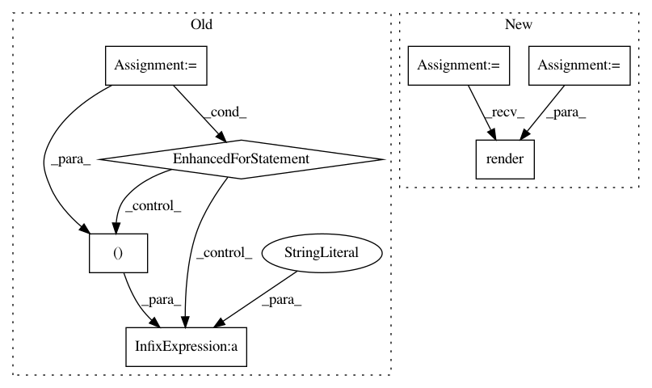

c6418175813007be62406bfb35b42441202b017a,create_website.py,,get_latex_plot,#,189
Before Change
xs, ys, ls, axs, ays, als = create_pointset(prepare_data(all_data[algo], xn, yn), xn, yn)
latex_str +=
\\addplot %s coordinates { % only_marks
for i in range(len(xs)):
latex_str += "(%s, %s)" % (str(xs[i]), str(ys[i]))
latex_str += " };"
latex_str +=
\\addlegendentry{%s};
% (algo)
After Change
args = parser.parse_args()
def get_latex_plot(all_data, xn, yn, xm, ym, plottype, j2_env):
plot_data = []
for algo in sorted(all_data.keys(), key=lambda x: x.lower()):
xs, ys, ls, axs, ays, als = \
create_pointset(prepare_data(all_data[algo], xn, yn), xn, yn)
plot_data.append({ "name": algo, "coords" : zip(xs, ys),
"scatter" : plottype == "bubble" })
return j2_env.get_template("latex.template").\
render(plot_data = plot_data, caption = get_plot_label(xm, ym),
xlabel = xm["description"], ylabel = ym["description"])
def create_data_points(all_data, xn, yn, linestyle, render_all_points):
color_index = 0
output_str = ""
In pattern: SUPERPATTERN
Frequency: 3
Non-data size: 7
Instances
Project Name: erikbern/ann-benchmarks
Commit Name: c6418175813007be62406bfb35b42441202b017a
Time: 2018-03-03
Author: maau@itu.dk
File Name: create_website.py
Class Name:
Method Name: get_latex_plot
Project Name: jazzband/django-debug-toolbar
Commit Name: d85509edab8290666d056ba5f0a9423feceb64d5
Time: 2008-09-07
Author: rob@cogit8.org
File Name: debug_toolbar/panels/sql.py
Class Name: SQLDebugPanel
Method Name: content
Project Name: erikbern/ann-benchmarks
Commit Name: c6418175813007be62406bfb35b42441202b017a
Time: 2018-03-03
Author: maau@itu.dk
File Name: create_website.py
Class Name:
Method Name: build_detail_site